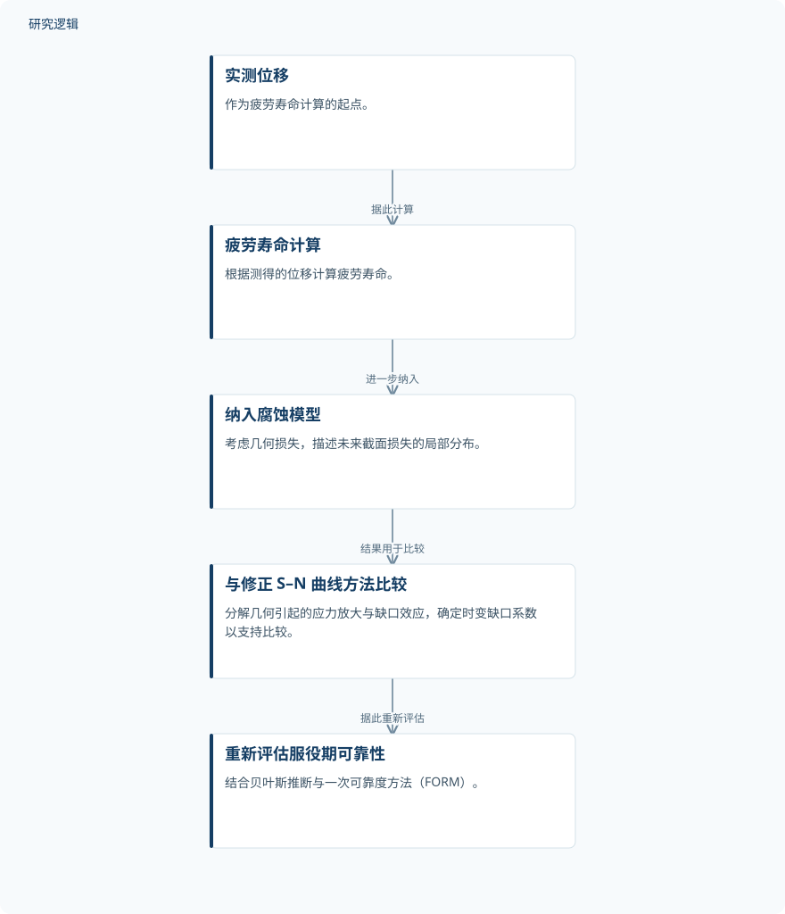

摘要解读
融合贝叶斯推断与FORM的百年腐蚀钢铁路桥实测信息驱动疲劳可靠性分析
Measurement-informed fatigue-driven reliability analysis for century-old corroded steel rail-bridge integrating Bayesian inference and FORM
解读更新 2026-11-07 10:10 · 依据公开摘要整理，未核验全文细节
百年铆接铁路钢桥的疲劳评估，如何同时考虑实测响应与持续腐蚀？这项研究将位移测量、腐蚀建模与概率可靠性分析相结合，值得关注的是：它尝试区分截面损失与缺口效应，让不同腐蚀疲劳评估路径能够进行比较。
文章目录
老桥疲劳：腐蚀不仅意味着截面变薄
疲劳是历史铆接铁路桥的重要失效机制，腐蚀又会随时间加剧这一问题。研究对象是德国图林根铁路系统中、连接 Wolkramshausen 与 Erfurt 的一座百年铆接钢桥，该桥因显著的腐蚀诱发疲劳损伤于2010年退役。
这项案例研究关注腐蚀与疲劳对结构性能的共同影响。其分析不仅考虑几何损失，还区分几何变化引起的应力放大与缺口效应，避免在比较不同评估方法时将两者混为一谈。
从实测位移走向时变可靠性评估
研究首先根据实测位移计算疲劳寿命，随后将其纳入考虑几何损失的腐蚀模型，以描述未来局部截面损失的分布。另一条比较路径采用经过腐蚀影响修正的 S–N 曲线，摘要明确说明两条路径的结果进行了比较。
为实现这种比较，作者提出将几何引起的应力放大与缺口效应分解的方法，据此确定随时间变化的缺口系数。在这些工作的基础上，再结合贝叶斯推断与一阶可靠度方法（FORM），重新评估桥梁服役期内的可靠性。
依据摘要整理的腐蚀疲劳评估过程


仅概括摘要明确描述的方法关系；这是依据摘要整理的示意图，不是论文原图，也不表示具体计算配置。
下载 SVG图示关系说明
实线表示相邻阶段的信息流，虚线表示跨阶段联系或反馈。
实测位移 → 疲劳寿命计算：据此计算；疲劳寿命计算 → 考虑几何损失的腐蚀模型：纳入模型；考虑几何损失的腐蚀模型 → 腐蚀修正的 S–N 曲线路径：结果比较；考虑几何损失的腐蚀模型 → 应力放大与缺口效应分解：比较所需的分解；腐蚀修正的 S–N 曲线路径 → 应力放大与缺口效应分解：比较所需的分解；应力放大与缺口效应分解 → 贝叶斯推断与 FORM：支持重新评估
摘要报告了状态校准的价值，但未给出提升幅度
摘要报告，上述分解使时变缺口系数的确定成为可能；依据结构实际状态调整分析的框架，提高了疲劳损伤演化预测的准确性，并帮助认识腐蚀条件下可靠性裕度的变化。
这些结论在摘要中属于定性报告，没有给出预测误差、可靠度变化或两条评估路径之间的差异数值。因此，目前可以把握其方法衔接与作者报告的作用，但不能判断精度提升有多大，也不能认定某条路径更优。
案例之外的适用性仍需更多证据
本次解读仅依据所提供的完整摘要。摘要明确描述了一座桥梁案例，但未交代位移测量的样本规模、测点布置、观测时长，以及腐蚀模型和贝叶斯推断的具体设置，这些信息不足以支持复现或独立核验。
摘要也未展开两条路径的比较指标、独立验证范围或跨桥梁适用性，因而无法判断结论能否推广到其他结构与腐蚀状态。这些是当前材料的判断边界，并不意味着论文没有开展相应工作。
阅读启发：关注实测信息如何进入可靠性判断
阅读启发：对结构健康监测与运维读者，后续阅读可重点追问实测位移如何约束疲劳寿命，以及贝叶斯推断更新了哪些不确定量。另一条值得追踪的线索，是几何损失与缺口效应如何划分，才能使两条评估路径具有可比性。
摘要将监测数据、不确定性方法和可靠性分析联系到历史结构的维护管理，但没有展示具体维护决策的实施效果。宜将其理解为面向运维的分析依据，而非已经验证的维护收益。
以上为本站阅读启发与建议，不是论文已验证的结论。